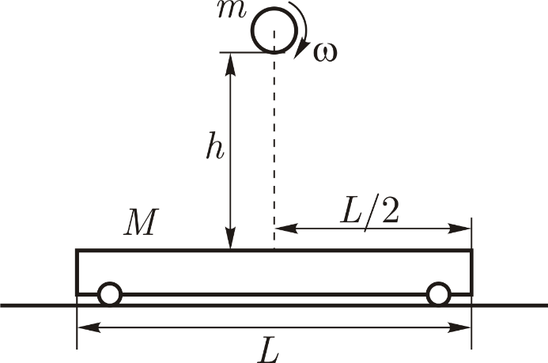

X18 (2018) — English translation
A ball of mass $m=80~\text{kg}$ and radius $R=20~\text{cm}$ is twisted around a horizontal axis with an angular velocity $\omega$ and released without initial velocity over a stationary cart of mass $M=200~\text{kg}$ from a height $h=1{,}25~\text{м}$. The ball hits the exact center of the cart. Its longitudinal axis lies in the plane of rotation of the ball. The impact occurs in a very short time. The deformation of the cart upon impact is absolutely elastic. Sliding between the ball and the surface of the cart continues throughout the entire impact time. Sliding friction coefficient $\mu=0{,}1$. The rolling friction between the cart wheels and the table can be neglected. The ball bounces off the cart and falls back on it. Gravity acceleration $g=10~\text{м}/\text{с}^2$.

Further, at all points, consider that the ball begins to move with the minimum possible angular velocity $\omega_{min}$ (from point $\mathrm{A2}$).
Source: https://pho.rs/p/309